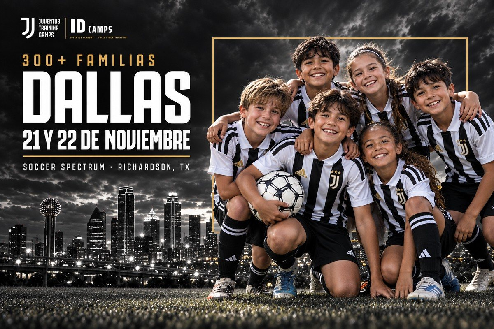

 | ||
|
Hola Maria, Más de 300 familias del área de Dallas ya entrenaron con Juventus. Esto es lo que encontraron. 01 Entrenadores desde Italia Entrenadores oficiales de Juventus Academy dirigen cada sesión con la metodología de Juventus. 02 Grupos pequeños Un entrenador por cada 12 a 15 jugadores, para que cada uno reciba atención individual. 03 Para todos los niveles Niños y niñas de 6 a 16 años, jugadores y porteros. No hace falta jugar en un club. 04 Una puerta a más Los jugadores que más se destacan quedan anotados para futuras oportunidades de Juventus Academy, como la Juventus Training Experience en Italia.

| ||
|